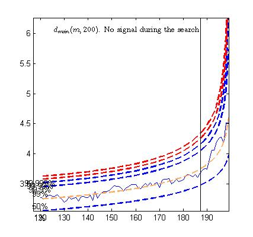
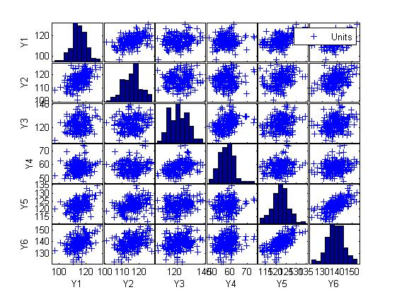

| Flexible Statistics Data Analysis Toolbox™ |
|
| Provide feedback on FSDA toolbox |
The forward search in multivariate analysis used for outlier detection purposes examines the minimum Mahalanobis distance among observations that are not in the subset (say of size m). If this ordered observation [m+1] is an outlier relative to the other m observations, this distance will be ‘large" compared with the maximum distance of observations in the subset. In uncalibrated use of the minimum deletion residual to detect outliers the decision whether a difference in distances is ‘large" is subjective, without reference to any null distribution. To calibrate the forward search and so to provide an objective basis for decisions about the number of outliers in a sample we have found the distribution of the minimum Mahalanobis distance in the forward search. The output is a series of theoretical simultaneous confidence bands (envelopes) associated to the quantiles of the distribution of the minimum Mahalanobis distance.
To use the envelopes in the forward search for outlier detection we follow a two-stage process. In the first stage we run a search on the data, monitoring the bounds for all n observations until we obtain a "signal" indicating that observation m† therefore succeeding observations, may be outliers, because the value of the statistic lies beyond our threshold. In the context of signal detection, we have tried to take into account the fact that the envelopes of minimum Mahalanobis distance outside subset consist roughly of three parts; an initial decreasing part, a "central" roughly flat part and a steeply curving "final" part. Once a signal has been found (e.g. three consecutive values of minimum Mahalanobis distance above a certain threshold), we superimpose envelopes for values of n from this point until the first time that we introduce an observation we recognize as an outlier.
In order to illustrate how the procedure works we concentrate our attention on the dataset: the Swiss heads data.
The code below loads the data and launch the automatic outlier detection procedure
% Load the data
load('head');
% Use function FSM (Forward search in multivariate analysis with automatic outlier detection purposes)
[out]=FSM(head);
The plot of the Minimum Mahalanobis distance among observations outside the subset and the scatterplot matrix, that we report below, are produced. They show that no outlier has been detected.


| Provide feedback on FSDA toolbox |
|
|
Robust Forward Linear Regression with exploratory purposes | Introduction to robust transformations in linear regression |
|